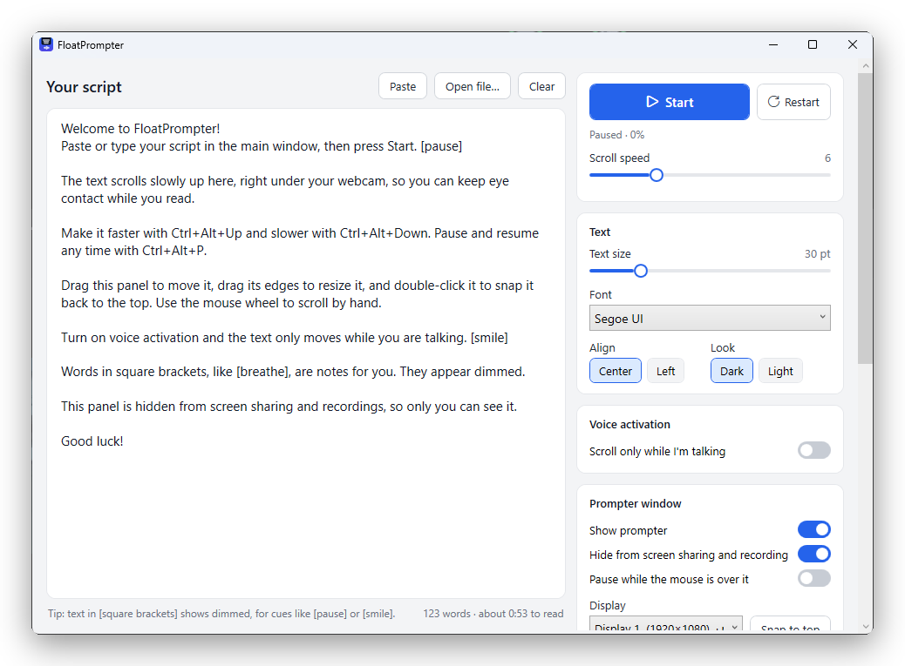

A free teleprompter for Windows that your call can't see
FloatPrompter sits at the top of your screen, right under the webcam, so you can read your notes and keep eye contact. On Windows 10 version 2004 or later, Zoom, Teams, Google Meet, OBS and screen recordings don't pick it up.
Version 1.0.1, about 115 KB. Nothing to install, no account, MIT license.
Made for reading on calls
Everything happens in one small panel that docks under the webcam, plus a main window where you paste your script.
- Right under the webcam
- The panel docks at the top center of your screen, so your eyes stay close to the camera while you read. Drag it anywhere, and double-click to snap it back.
- Hidden from screen sharing
- On Windows 10 version 2004 or later, people on Zoom, Teams, Meet, Discord or OBS see neither the prompter nor the window with your script in it.
- Moves only while you talk
- Turn on voice activation and the text scrolls while you speak and waits when you stop. A small dot in the corner turns green while it hears you.
- Private by design
- Voice activation only measures how loud your microphone is, on your PC. Audio is never recorded, saved or sent anywhere, and the app never goes online.
Paste a script and press Start
- Paste or type your script in the main window, or open a text file.
- Press Start, and the text scrolls up in the panel under your webcam.
- Set the speed, text size, font and look. Your script and settings save on their own.
Anything in [square brackets], like [pause] or [smile], shows up dimmed, so you can leave yourself cues.

Hotkeys that work from any app
Control the prompter without leaving your call or your slides.
| Keys | What it does |
|---|---|
| Ctrl + Alt + P | Play or pause |
| Ctrl + Alt + ↑ / ↓ | Faster or slower |
| Ctrl + Alt + ← / → | Jump back or forward |
| Ctrl + Alt + R | Back to the start |
| Ctrl + Alt + H | Show or hide the prompter |
| Ctrl + Alt + V | Voice activation on or off |
Questions
Is FloatPrompter really free?
Yes. It's open source under the MIT license, with no paid tier, no account and no ads.
Will people on my Zoom or Teams call see the teleprompter?
Not on Windows 10 version 2004 or later, where Windows lets apps hide a window from screen capture. If Windows won't hide it on your PC, FloatPrompter shows a warning, and sharing a single app window instead of your whole screen keeps the prompter out of the share. Nothing on screen can hide from a phone camera pointed at it, or from a capture card recording your display output.
Does it record my voice?
No. Voice activation only checks how loud your microphone is so it knows when you're talking. The audio stays in memory on your PC and is never recorded, saved or sent anywhere.
Is it an alternative to Moody Teleprompter?
It covers the same idea, a prompter under your webcam that the call can't see, for free and with open source code. FloatPrompter is an independent project and isn't affiliated with or endorsed by Moody.
Why does Windows warn me when I open it?
The app isn't code-signed yet, so Windows SmartScreen may show "Windows protected your PC" the first time. Click More info, then Run anyway. The full source is on GitHub if you'd like to check it or build it yourself.
Which Windows versions does it run on?
Windows 10 and Windows 11. It uses the .NET Framework that already comes with Windows, so there's nothing else to install.